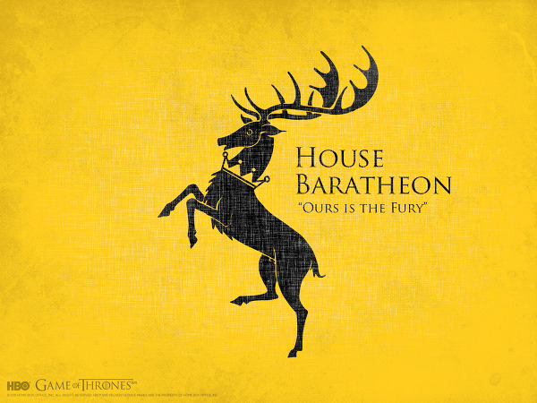

연원이 비교적 짧은 가문으로, 구 바라테온 가문이라고 볼 수 있는 듀랜든 가문은 타르가르옌 가문의 정복 이전까지 스톰랜드를 다스리던 폭풍왕이었다. 아에곤의 정복에서 아르길락 듀랜든이 전사하자 정복왕 아에곤의 친우 오리스 바라테온이 그의 딸 아르겔라 듀랜든과 결혼하면서 생긴 가문으로, 듀랜든 가문의 가언과 문장을 그대로 이어받았다.[4] 참고로 오리스는 아에곤의 이복형제라는 소문...정도가 아니라 기정사실 취급받고 있으며 불과 피에서 대놓고 이복형제라고 명시되었다. 따라서 타르가르옌 가문의 분가라고 볼 수도 있다. 용들의 춤에서는 보로스 바라테온 공은 아버지 보어문드가 흑색파에 더 가까웠음에도 불구하고 결혼 제의로 녹색파를 지지하였다. 하지만 그와 스톰랜드군은 킹스 랜딩으로 진격하다가 리버랜드군에게 격파되었다. 아에곤 5세 치세에는 던칸 타르가르옌 왕자가 결혼 약속을 어기자 라이오넬 바라테온 공이 분노하면서 독립을 선언하기도 했지만 결국에는 결투 재판에서 지고 아에곤의 딸 라엘르를 아들과 결혼시키면서 잘 마무리된다. 따라서 로버트와 그의 동생들은 구 왕가인 타르가르옌 가문과 친척 관계다. 로버트의 반란에서 로버트 바라테온이 반란을 일으켜 왕이 된 이후 칠왕국의 왕가가 되었으며, 킹스 랜딩의 바라테온 가문, 드래곤스톤의 바라테온 가문, 스톰즈 엔드의 바라테온 가문으로 분리된다. 원작에선 아직 스타니스 바라테온이 살아남았고 스타니스가 죽으면 외동딸 시린이 물려받게 된다. 토멘은 바라테온 혈통이 아니고, 에드릭 스톰과 겐드리는 서자 출신이다. 드라마판에서는 이 가문은 상황이 더 심각한데, 적통은 다 죽어버렸다.(...) 더군다나 드라마 기준으로 토멘 바라테온의 자살 이후 세르세이 라니스터가 스스로 왕위를 계승하면서 자신을 "라니스터 가문의 세르세이"라고 호칭, 바라테온 가문은 사실상 멸문되었다.